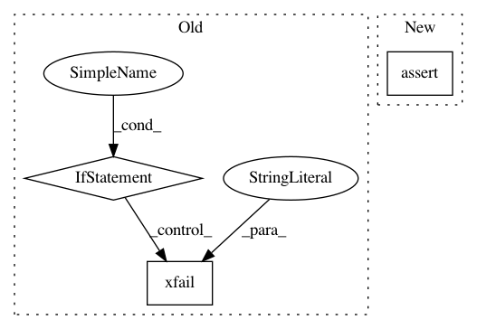

412554b2f06f3782c9336f5a4dfc5bb890219afd,pandas/tests/indexing/test_coercion.py,TestInsertIndexCoercion,test_insert_index_datetimes,#TestInsertIndexCoercion#Any#Any#Any#Any#,443
Before Change
request.node.add_marker(
pytest.mark.xfail(reason="ToDo: must coerce to object")
)
elif fill_val.tz != insert_value.tz:
request.node.add_marker(
pytest.mark.xfail(reason="GH 37605 - require tz equality?")
)
obj = pd.DatetimeIndex(
["2011-01-01", "2011-01-02", "2011-01-03", "2011-01-04"], tz=fill_val.tz
After Change
ts = pd.Timestamp("2012-01-01", tz="Asia/Tokyo")
result = obj.insert(1, ts)
expected = obj.astype(object).insert(1, ts)
assert expected.dtype == object
tm.assert_index_equal(result, expected)
item = 1
result = obj.insert(1, item)
In pattern: SUPERPATTERN
Frequency: 3
Non-data size: 3
Instances
Project Name: pandas-dev/pandas
Commit Name: 412554b2f06f3782c9336f5a4dfc5bb890219afd
Time: 2021-01-21
Author: jbrockmendel@gmail.com
File Name: pandas/tests/indexing/test_coercion.py
Class Name: TestInsertIndexCoercion
Method Name: test_insert_index_datetimes
Project Name: pandas-dev/pandas
Commit Name: 56f03c79e3c4715d4bcd054af7033b96fd8c0f1c
Time: 2020-10-17
Author: jbrockmendel@gmail.com
File Name: pandas/tests/arithmetic/test_timedelta64.py
Class Name: TestTimedeltaArraylikeMulDivOps
Method Name: test_td64arr_mod_tdscalar
Project Name: nipy/dipy
Commit Name: b20a64f6ed5fc91ab85761f3dddf8055542dfb4e
Time: 2020-09-22
Author: skab12@gmail.com
File Name: dipy/tracking/tests/test_life.py
Class Name:
Method Name: test_FiberModel_init